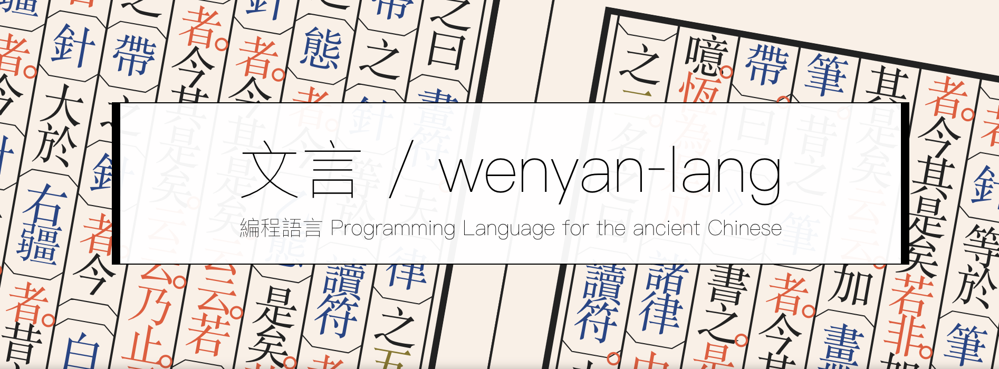
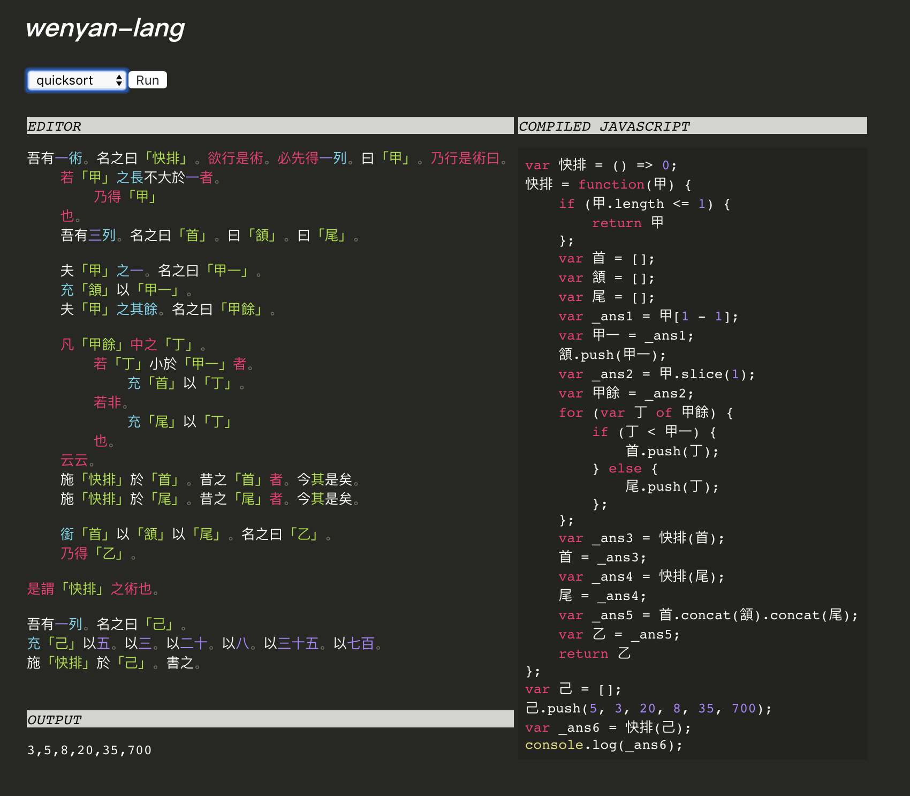
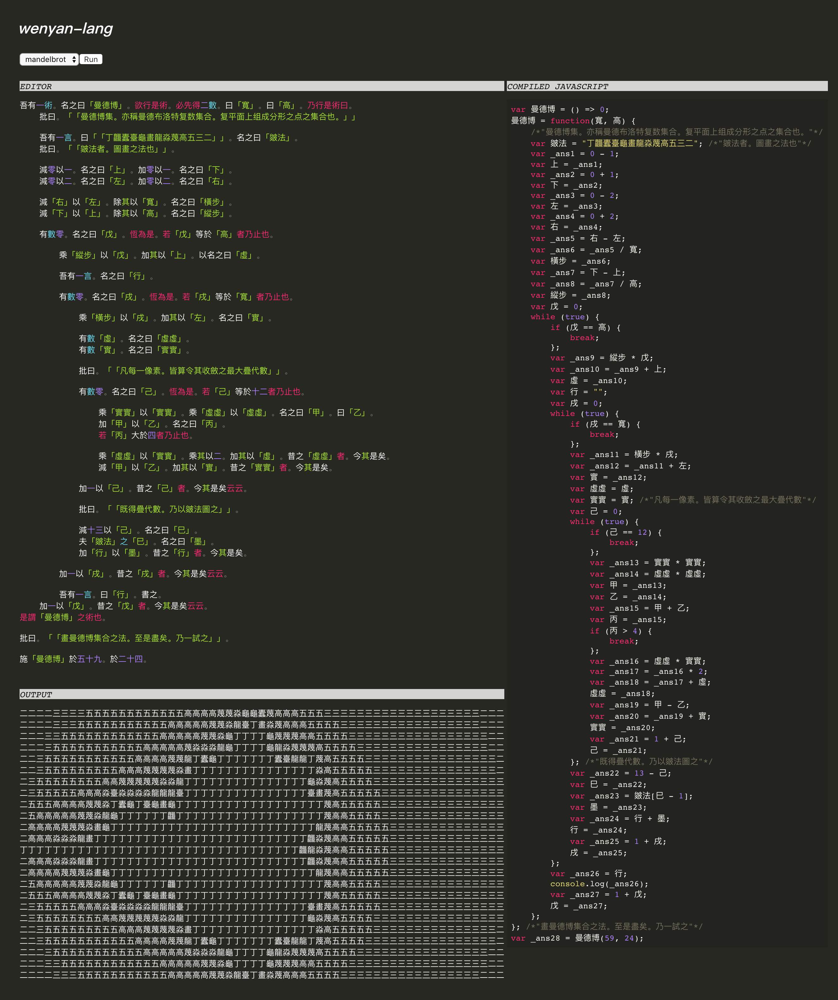
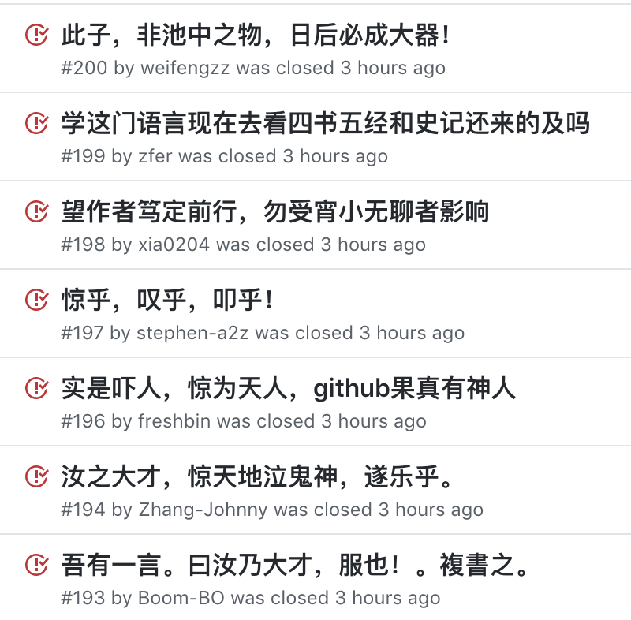
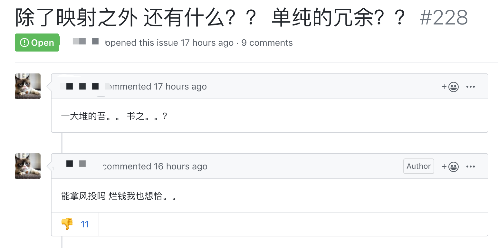
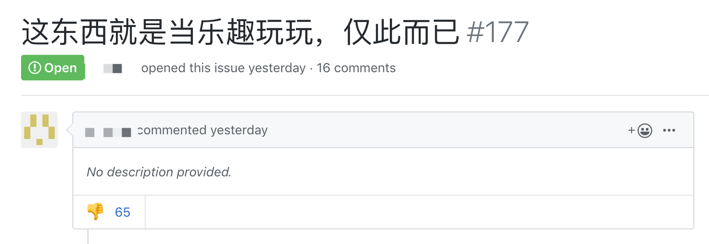
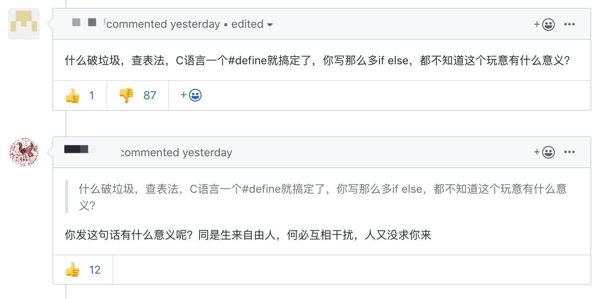

毕竟有易语言在前，有人认为中文可以降低国人学习编程的门槛，也增强汉语的国际地位。然而最近大火的文言文编程语言，让你明白什么叫“中文比英语还难”。

最近有个 GitHub 项目火了 —— 文言编程语言 / wenyan-lang。
现在这个项目已经超过 10K Stars 了（昨天看还是 9K，一夜涨了 1K），咱赶紧来研究下。
学语言嘛，当然先从 “Hello world” 开始，看看文言版怎么写：
吾有一數。曰三。名之曰「甲」。
為是「甲」遍。
吾有一言。曰「「問天地好在。」」。書之。
云云。没看懂，编译成 JavaScript：
var n = 3;
for (var i = 0; i < n; i++) {
console.log("問天地好在。");
}运行：
問天地好在。
問天地好在。
問天地好在。完全的中文编程有木有，使用古汉语语法，具有图灵完整性，可以编译成 JavaScript 或 Python。
如同古人篆书一般，一顿之乎者也，程序写好了！
赶紧学起来，第一章变量走起，中文编程肯定不能用 abc，还好我们有甲乙丙：
| wenyan | JavaScript |
|---|---|
吾有一數。曰三。名之曰「甲」。 |
var a = 3; |
有數五十。名之曰「大衍」。 |
var dayan = 50; |
吾有一言。曰「「噫吁戲」」。名之曰「乙」。 |
var b = "alas!"; |
true/false 我们也有对应的 陽/陰（繁体的阳/阴），类型就称为“爻”（卦符的基本符号）：
| wenyan | JavaScript |
|---|---|
吾有一爻。曰陰。名之曰「丙」。 |
var c = false; |
if 判断也没问题：
| wenyan | JavaScript |
|---|---|
若三不大於五者。乃得「「想當然耳」」。若非。乃得「「怪哉」」也。 |
if(3<=5){return "of course"}else{return "no way"} |
循环更为简洁，直接声明次数，最后以云云结尾：
| wenyan | JavaScript |
|---|---|
為是百遍。⋯⋯ 云云。 |
for (var i = 0; i < 100; i++){ ... } |
恆為是。⋯⋯ 云云。 |
while (true) { ... } |
加减乘除一应俱全，连逻辑运算符都支持：
| wenyan | JavaScript |
|---|---|
加一以二。乘其以三。 |
(1+2)*3 |
除十以三。所餘幾何。 |
10%3 |
減七百五十六以四百三十三。名之曰「甲」。 |
var a = 756-433; |
夫「甲」「乙」中有陽乎。 |
a || b |
容器类型也支持，而且尊重汉语习惯，首个下标是从一开始：
| wenyan | JavaScript |
|---|---|
吾有一列。名之曰「甲」。充「甲」以四。以二。 |
var a = []; a.push(4, 2); |
夫「寶劍」之長。 |
sword.length; |
夫「甲」之一。 |
a[0] |
夫「玫瑰」之「「名」」。 |
rose["name"] |
下面是进阶语法了，定义一个函数 吾有一術：
| wenyan | JavaScript |
|---|---|
吾有一術。名之曰「吸星大法」。是術曰。⋯⋯是謂「吸星大法」之術也。 |
function f(){...} |
吾有一術。名之曰「六脈神劍」。欲行是術。必先得六數。曰「甲」。曰「乙」。曰「丙」。曰「丁」。曰「戊」。曰「己」乃行是術曰。⋯⋯是謂「六脈神劍」之術也。 |
function f(a,b,c,d,e,f){...} |
吾有一術。名之曰「翻倍」。欲行是術。必先得一數。曰「甲」。乃行是術曰。乘「甲」以二。名之曰「乙」。乃得「乙」。是謂「翻倍」之術也。 |
function double(a){var b = a * 2; return b;} |
施「翻倍」於「大衍」。 |
double(dayan); |
吾有一數。曰五。書之。 |
console.log(5); |
作者提供了经典程序题目的文言版代码，比如埃拉托斯特尼筛法、 快速排序、曼德博集合、汉诺塔。
另外作者还提供了在线 IDE，可以直接编译执行代码。


看完这些代码让我感觉：
《九章算术》就是一本算法导论；
《孙子兵法》就是一本安全攻防；
《易经》大概是一本二进制逆向吧...
该项目的作者名叫 Huang Lingdong，卡内基梅隆大学（CMU）计算机专业大四学生。这么一位世界顶级高校的大佬，做这个项目其实只是一个期末作业亦或业余爱好。
点进 issues，广大中国编程爱好者也表达了对作者的敬佩：

然而当我也惊叹这个项目的脑洞和创意时，在 issues 里还是看到了一些令我非常不悦的话题：

这位兄弟的脑洞看来比作者还大...
不然怎么把一个编程语言联系到风投...

这位兄弟前半句是对的，但后半句似乎有一些鄙夷和不屑？
我在下边回复给他一个表情：
当然哪里都少不了“意义党”：

真是哪里都有上纲上线的人，作者自娱自乐写了一个开源项目，为此查阅大量古汉语资料，也不图什么名利，就获得几千 Stars，就成为了某些人嘴里的恰烂钱、无意义、垃圾项目。
而当我点开这些人的头像时，发现他们挂着都是一些 Fork 和不明所以的 Repo，我也不知道他们挂这些的意义是什么...
我当然也从源码看出，这个项目可能叫“解释器”更贴切一些，但作者也从来没说这是一个多么认真、能用于生产环境的正式项目。
如果你和上面的他们有类似的想法，那么我给你普及一个编程名词：
Esoteric programming language，简称 Esolang，它们的设计被用于测试计算机语言设计的极限，作为一个概念的证明，或仅仅是一个玩笑。Esolang 创作者通常并不打算让它成为主流编程语言，他们几乎不会在意语言的可用性，甚至恰恰相反，会故意增加使用难度。
比如 Brainfuck，它是在 1993 年被创造的编程语言，语法仅包含八种符号，没有任何单词，用它打印 Hello world 是这样的：
++++++++++[>+++++++>++++++++++>+++>+<<<<-]
>++.>+.+++++++..+++.>++.<<+++++++++++++++.
>.+++.------.--------.>+.>.再比如 MarioLANG，它同样只能使用符号，需要使用形似马里奥关卡的语法来书写：
++++: > > +:+:+:+:+:+:+:::::
====+ >^=== """=================
+:-):(:^= = !
========= = #
= ! .+.,:-<
=### ======"Parenthesis Hell，言如其名，括号地狱，只能使用括号来书写：
(()()(()()(()()()()((()()(()(()((()((()()()((()((()()()((()((((()()(()(
)()()()()(((()(((()((()((((()(((()()(()()((()((()()()((()()(()()()()(()
()()()(()()()()(()(())))))))))))))))))))))))))))))))))))))))))))))))))所以 wenyan-lang 实际也属于 Esolang，并不是用于生产的语言，你在这些语言中寻找意义，我觉得你这种行为就挺没意义的...
wenyan-lang GitHub: https://github.com/LingDong-/wenyan-lang
本文属于原创，首发于微信公众号「面向人生编程」，如需转载请后台留言。
关注后回复以下信息获取更多资源
回复【资料】获取 Python / Java 等学习资源
回复【插件】获取爬虫常用的 Chrome 插件
回复【知乎】获取最新知乎模拟登录